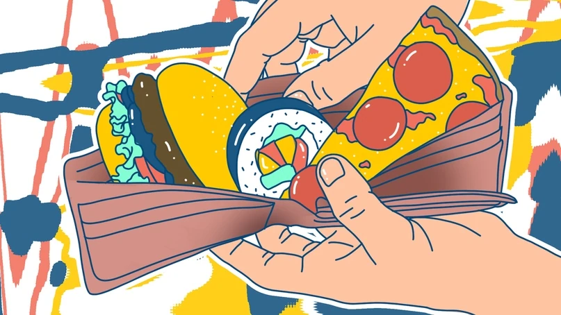
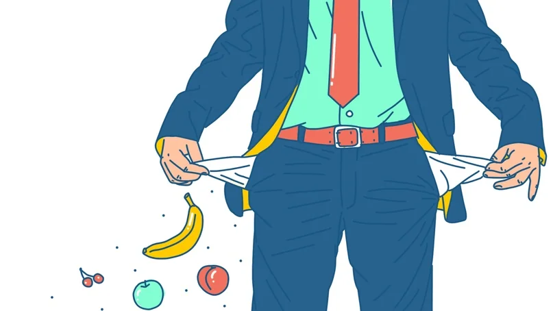

Данила Блюз задался целью написать по одному тексту обо всем на свете: о каждом мелком и крупном предмете и явлении на планете Земля. Собираем потихоньку этот монументальный труд. Вот глава, посвященная еде.
Чтобы нормально функционировать, людям нужно топливо. В качестве топлива может служить все что угодно: трава, опилки, разные семена, коренья, джем, куски мяса и внутренности животных, насекомые и много чего другого. Топливо это зовется у нас “еда”.

Чтобы еда попала внутрь, у людей в голове есть ротовая дыра. В этой дыре есть зубы, которыми еда перемалывается и отправляется по специальной трубе в отсек с кислотой. В этом отсеке еда разлагается на полезные элементы и отходы. Отходы скидываются наружу из другой человеческой дыры — так называемой жопы. Главное в человеческой жизнедеятельности — не перепутать отверстия для приема пищи и сброса отходов. Казалось бы, задача несложная, но даже с ней тупые люди умудряются напортачить. Некоторые человеческие особи пихают еду себе в жопу, другие люди их называют “пидорасами” и изгоняют из своего племени за порчу полезного для жизни топлива. Изгнанные из общества и не приспособленные к потреблению еды, пидорасы уходят в леса, где умирают от голода и становятся пищей для разного рода падальщиков.
Несмотря на то что люди могут есть практически все что угодно, достать и употребить еду удается не всем. Взять, к примеру, ротовые отверстия. С годами зубья в них истачиваются, гниют и выпадают, отчего человек становится не способен поглощать пищу. Мы придумали вставлять взамен выпавших самодельные зубы. Некоторые вытачивают их из дерева, кто-то вставляет в десны разные железки, болтики и гвозди, а кто-то — маленькие, обточенные напильником камешки. Есть те, кому лень возиться с самодельными зубами, и тогда они за все ту же еду нанимают себе других людей — чтобы они пережевывали еду за неспособных и сплевывали им в ротовые дыры. Ну а если кто ни зубов смастерить не может, ни пережевывателя себе нанять, тогда, значит, пора ему во все тот же лес идти (где пидорасы) и там от голода помирать.
Чтобы как можно дольше не помирать от голода, люди придумали работу. То есть раньше основным делом у них было добывать себе еду, но, как часто бывает, не у всех это получалось.
Неумехи оставались голодными и зачастую уходили в лес, к пидорасам, но потом один из них сказал: “А я вот умею голых баб рисовать. Давайте вы мне дадите еды, а я вам на стене голую бабу нарисую”. В итоге люди начали менять еду на всякие мелкие услуги.
А потом они придумали деньги, потому что за некоторые услуги начали требовать очень много еды. Шаман, к примеру, вызывает дождь или злых духов заклинает — это дорого стоит, шаману за всю жизнь столько не съесть, а за деньги можно свой вигвам обустроить, плоский телек туда купить, лавовых ламп, кресло массажное. Теперь люди покупают еду только за деньги, сами себе еду добывают только совсем упоротые человеки, которые так и живут в вигвамах и землянках.
Чтобы получать деньги для еды, надо ходить на работу. Чтобы тебе дали работу, надо клевое чего-то уметь делать: фокусы показывать или жонглировать факелами, дабы другие люди охуевали, потому что сами так не могут. И давали тебе до хуища денег. В принципе, можно делать и такое, что все умеют: гайку, там, крутить на заводе или говно кидать лопатой. Но тогда тебе денег мало дадут, потому что таких долбоебв полным полно и это вообще не очень клевое у тебя умение. А когда денег мало, ты можешь купить себе только хуевую еду.

Да, тут надо сказать, что для людей очень важно, чтобы еда была вкусной. В принципе, энергию она дает одинаковую, но люди за долгие века совсем поохуевали и хотят от пищи не просто энергии, но и приятных вкусовых ощущений в ротовой дыре. Там у них есть язык, который нужен, чтобы друг друга на хуй посылать, но по какой-то случайности этот язык еще и чувствует, приятная эта еда или говно. За приятную еду человек готов много денег отдать, за говно, по идее, можно ничего не платить, но поскольку жрать охота, то как бы и за говно последние копейки отдашь.
Так вот, самой говенной едой у людей считается редька — ее жрут те, кто говно кидает лопатой. Потом идет свекла, картоха, морква, лук, хрен, репа — все, что в земле растет, оно такое себе по вкусу, жрать можно, но радости от этого мало. Еще есть хлеб, от него тоже никакого восторга. Но если сверху положить на кусок хлеба что-нибудь вкусное, то получается очень ценимый у людей так называемый бутерброд.
Потом идут огурцы, помидоры, перец болгарский — это уже попизже еда. Следующими идут фрукты: яблоки, бананы, апельсины, дыня, груши — они сладкие, а люди любят, когда сладко в ротовой дыре. Еще есть шоколад, он на вид как говно, но очень сладкий, некоторые люди его очень любят и жрут тоннами вместо всей остальной еды. Дальше идет колбаса, сосиски, бекончик, котлетосы. Их вот на хлеб можно класть — нормальная тема, люди очень любят.
Ну а самая вообще вкусная еда, за которую люди убивать готовы друг друга, готовы родную мать в рабство продать на галеры, готовы от бессмертия души отказаться — это шавуха. Шавуха — это когда в тонкие хлебные пласты заворачивается мясо, огурцы, помидоры, перец, салат и все это поливается специальным соусом. Когда люди суют в рот шавуху, они громко стонут от удовольствия, закатывают глаза и массируют свои соски. Шавуху делают специальные люди, которых можно отличить по смуглому цвету кожи, большому носу и обильной черной растительности на лице. Этих человеков очень почитают среди людей и, трепеща, расступаются, когда те идут по улице или начинают танцевать ни стого ни с сего. Некоторые человеки называют шавуху “шаурма”. Таких людей пиздят по морде и выгоняют в лес к пидорасам и беззубым старикам.